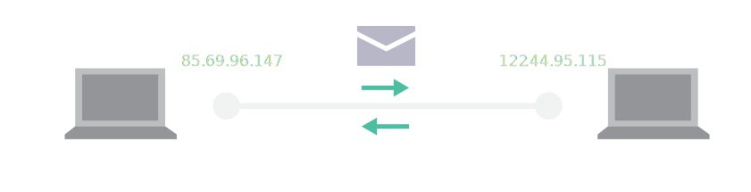
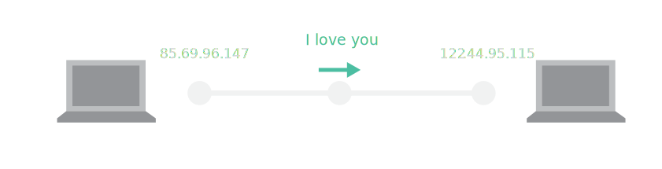
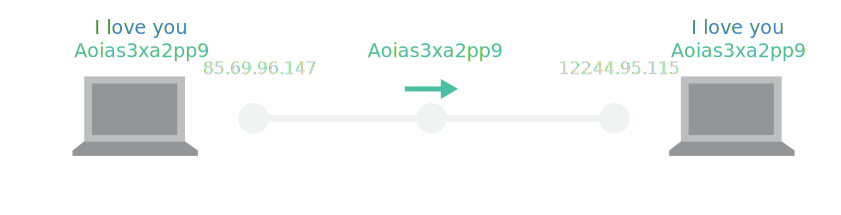

### Hacking, Cybersecurity and Law ##### Tech Myth Busting Cycle Tuesday 13th February 2018 We_Start
##### Nicolas Conti nicolas.conti@sciencespo.fr ##### Julien Denes julien.denes@sciencespo.fr ##### Alexis Thual alexis.thual@polytechnique.edu
### The Tech Myth Busting Cycle: two main goals * ##### demystify core concepts * ##### show things
### Organization * #### Hacking, Cybersecurity and Law * #### Defining Artificial Intelligence in 2018 * #### AI, Data and Public Policy
### Two crucial ideas today * #### cybersecurity is a "physical" matter * #### hacky data collection now is a problem Notes: Les deux objets de la séance : * les failles de sécurité existent parce que tout le monde est connecté au même réseau; pour autant, les softwares peuvent facilement être sécurisés * même lorsque tout est sécurisé, il est possible d'acquérir une donnée de valeur; la loi tente de nous protéger vis-à-vis de cela
### Demo I ##### Wireshark <!--  -->
### The internet in a nutshell ##### IP address  Notes: Demo ping
### The internet in a nutshell ##### IP address <img src="src/multiplicity.svg" width='90%'>
### The internet in a nutshell ##### IP address - DNS <img src="src/dns.svg" width='90%'> Notes: Demo traceroute
### The internet in a nutshell ##### IP address - DNS 
### The internet in a nutshell ##### IP address - DNS - Encryption 
### Cryptography ##### Insights on an uncrackable method (for now)


### Tubes and geopolitical influence Position géographique centrale de la France + acteur de la construction du réseau : atout géopolitique majeur


What can be transmitted?
Information type
Web pages
Files
Shell commands
Protocol
HTTP, HTTPS
FTP
SSH

### A Service perspective ##### Processes <img src="src/machine.svg" width='60%'>
### A Service perspective ##### Processes
### A Service perspective ##### Processes - Ports <img src="src/port.svg" width='60%'>
### A Service perspective ##### Processes - Ports <img src="src/unicity.svg" width='60%'>
### Famous hacking methods ##### Current system <img src="src/default.svg" width='60%'>
### Famous hacking methods ##### Man in the middle
### Famous hacking methods ##### Denial of Service
### Famous hacking methods ##### Denial of Service
### Famous hacking methods ##### Backdoor processes <img src="src/backdoor.svg" width='60%'> Notes: * exemple de la déduction des touches tapées sur un iPhone
### Demo II ##### Collect BSSID Addresses <pre><code data-trim data-noescape> > airport -s </code></pre>
Démo : récolter soi-même des données pertinentes Introduction au terminal, au code, aux logs Cet exemple montre ce qu'on peut faire en secret


### Is data collection only a "hacker thing"? <iframe width="700" height="392" style="overflow-y: hidden" scrolling="no" frameborder="0" src="http://www.bbc.com/news/av/embed/p05qb4mw/42248056"></iframe>

### Data collection and the law Ce qu'en dit la CNIL, le RGPD, etc.
Toutes ces données récoltées ne sont utiles que si elles sont analysées : transition avec la séance suivante.
Mettre des petits liens pour comprendre tout ça.